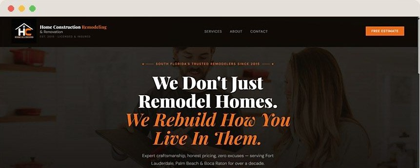
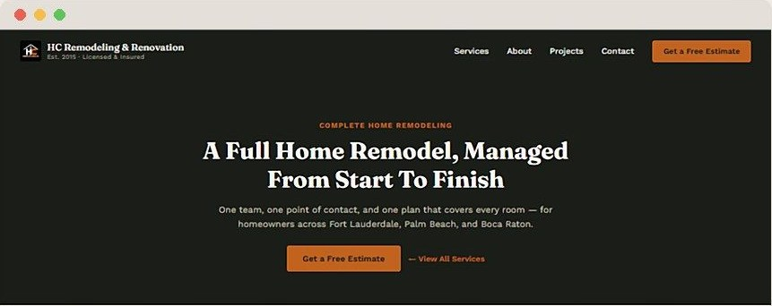
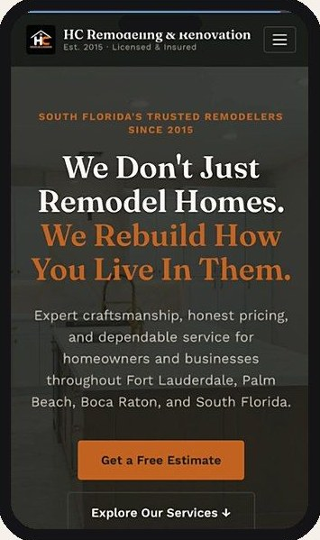
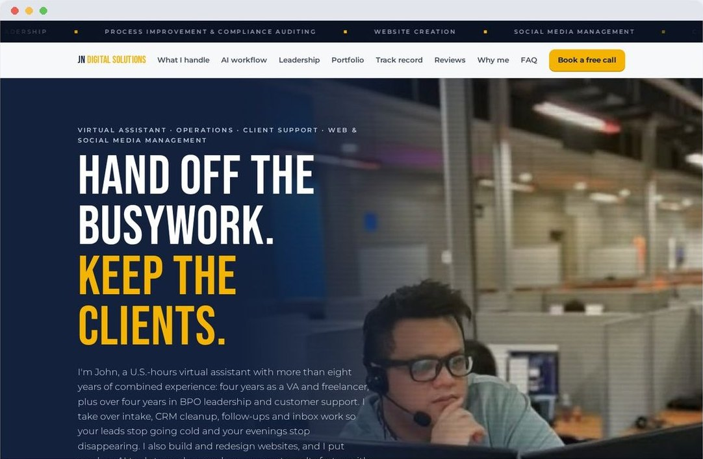

Here's the full code for **`work-hc-remodeling.html`** again. If you already created this file, you don't need to add it again. To check, open the file in your repo. If it starts with `<!doctype html>` and ends with `</html>`, it's complete.

If you still need to add it, click **Add file → Create new file**, name it `work-hc-remodeling.html`, paste this, and click **Commit changes**:

```html
<!doctype html>
<html lang="en" class="js" style="--client:#C8692A">
<head>
<meta charset="utf-8">
<meta name="viewport" content="width=device-width, initial-scale=1, viewport-fit=cover">
<title>HC Remodeling &amp; Renovation website redesign | JN Digital Solutions</title>
<meta name="description" content="Case study: a one-page contractor website rebuilt as seven focused pages with real project photos, a page per service and a mobile-first layout.">
<meta property="og:title" content="HC Remodeling &amp; Renovation website redesign | JN Digital Solutions">
<meta property="og:description" content="Case study: a one-page contractor website rebuilt as seven focused pages with real project photos, a page per service and a mobile-first layout.">
<meta property="og:image" content="hc-remodeling-case.jpg">
<link rel="preconnect" href="https://fonts.googleapis.com">
<link rel="preconnect" href="https://fonts.gstatic.com" crossorigin>
<link href="https://fonts.googleapis.com/css2?family=Bebas+Neue&family=Montserrat:wght@300;400;500;600;700;800&display=swap" rel="stylesheet">
<link rel="stylesheet" href="case-study.css">
</head>
<body>

<div class="marquee" role="region" aria-label="Areas of expertise"><div class="marquee-in">
  <ul class="marquee-track"><li>Operations &amp; Account Management</li><li>Leadership</li><li>Process Improvement &amp; Compliance Auditing</li><li>Website Creation</li><li>Social Media Management</li><li>Customer &amp; Client Support</li></ul>
  <ul class="marquee-track" aria-hidden="true"><li>Operations &amp; Account Management</li><li>Leadership</li><li>Process Improvement &amp; Compliance Auditing</li><li>Website Creation</li><li>Social Media Management</li><li>Customer &amp; Client Support</li></ul>
</div></div>

<header class="top">
  <div class="wrap">
    <a class="logo" href="index.html">JN <span>Digital Solutions</span></a>
    <nav class="top-nav" aria-label="Main">
      <a href="index.html#portfolio">All work</a>
      <a href="pricing.html">Pricing</a>
      <a class="btn btn-cta btn-sm" href="pricing.html#quote">Get my quote</a>
    </nav>
  </div>
</header>

<main>
<section class="c-hero">
  <div class="wrap">
    <div>
      <a class="crumb" href="index.html#portfolio">&larr; Back to portfolio</a>
      <h1 class="display">HC Remodeling &amp; Renovation</h1>
      <p class="lead">A South Florida remodeling contractor had one page doing the job of a whole website. I rebuilt it as seven focused pages around their real project photos, so homeowners can find the service they need and ask for an estimate from any page.</p>
      <div class="c-actions">
        <a class="btn btn-cta" href="https://homeconstructionremodeling.com" target="_blank" rel="noopener">Visit the live site <svg viewBox="0 0 24 24" width="16" height="16" fill="none" stroke="currentColor" stroke-width="2.2" stroke-linecap="round" stroke-linejoin="round" aria-hidden="true"><path d="M14 4h6v6M20 4l-9 9M18 14v5a1 1 0 0 1-1 1H5a1 1 0 0 1-1-1V7a1 1 0 0 1 1-1h5"/></svg></a>
        <a class="btn btn-ghost" href="pricing.html#quote">Get a quote for my site</a>
      </div>
    </div>
    <dl class="facts"><div><dt>Client</dt><dd>Licensed remodeling contractor, est. 2015</dd></div><div><dt>Service area</dt><dd>Fort Lauderdale, Palm Beach and Boca Raton</dd></div><div><dt>Scope</dt><dd>Full redesign, 1 page expanded to 7</dd></div><div><dt>Build</dt><dd>Hand-coded HTML, CSS and JavaScript</dd></div><div><dt>Hosting</dt><dd>Client&rsquo;s existing hosting, no new monthly fees</dd></div></dl>
  </div>
</section>

<section class="show" aria-label="Screenshots">
  <div class="wrap">
    <div class="show-grid"><div class="show-stack"><figure><a class="zoom" href="hc-before.jpg" target="_blank" rel="noopener" aria-label="Open full-size screenshot: HC Remodeling website before the redesign, desktop"></a><figcaption><b>Before</b>Everything lived on one long page.</figcaption></figure><figure><a class="zoom" href="hc-after.jpg" target="_blank" rel="noopener" aria-label="Open full-size screenshot: HC Remodeling Complete Home Remodeling service page after the redesign, desktop"></a><figcaption><b>After</b>Each service now has its own page, headline and estimate button.</figcaption></figure></div><figure><a class="zoom phone" href="hc-mobile.jpg" target="_blank" rel="noopener" aria-label="Open full-size screenshot: HC Remodeling live website on a phone"></a><figcaption><b>Live on mobile</b>Built for the phone first, where most homeowners search.</figcaption></figure></div><p class="show-note">Tap any screenshot to see it full size.</p>
  </div>
</section>

<section class="wrap section">
  <div class="story">
    <h2 class="display h2">Where it started</h2>
    <div class="body"><p>The original site was a single scrolling page. Services, proof of past work and contact details all competed for the same space, so a homeowner looking for one specific job had to dig to find it.</p><p>For a contractor, the website is often the first impression before a phone call. It needed to look as established as the company already is.</p><ul class="goals"><li>Help homeowners find the exact service they need, fast</li><li>Show real finished projects as proof of quality</li><li>Make requesting an estimate easy on any device</li></ul></div>
  </div>
  <div class="story">
    <h2 class="display h2">What I built</h2>
    <ul class="built"><li><p><b>Seven focused pages</b><span>A clear menu with Services, About, Projects and Contact one tap away.</span></p></li><li><p><b>A page for every service</b><span>Each service, like Complete Home Remodeling, gets its own headline, explanation and estimate button.</span></p></li><li><p><b>Real project photography</b><span>The company&rsquo;s own work replaces generic imagery, so visitors see what they&rsquo;ll actually get.</span></p></li><li><p><b>Browsable project gallery</b><span>Finished jobs in one place, so homeowners can picture the result in their own home.</span></p></li><li><p><b>Estimate button on every page</b><span>The &ldquo;Get a Free Estimate&rdquo; call to action stays in the header wherever a visitor lands.</span></p></li><li><p><b>Trust details up front</b><span>Est. 2015, licensed and insured, and the service areas are visible from the first screen.</span></p></li><li><p><b>Mobile-first layout</b><span>Designed for phones first, then scaled up to tablet and desktop.</span></p></li><li><p><b>Fast, simple to maintain</b><span>A lightweight static site with no page-builder subscription. Updates are a quick file edit.</span></p></li></ul>
  </div>
  <h3 class="extra-h">Beyond the website</h3><div class="extra"><div class="rv"><h3>Google Business Profile</h3><p>I also set up and manage the company&rsquo;s Google Business Profile and reviews, so the website and their Google listing work together.</p></div><div class="rv"><h3>Matching business documents</h3><p>Branded invoice templates in the same colors and logo as the new site, so every touchpoint looks consistent.</p></div></div>
</section>

<section class="wrap section" style="padding-top:0">
  <h2 class="display h2">How the project ran</h2>
  <p class="lead">The same four steps I use on every website project, so you always know what happens next.</p>
  <ol class="steps" style="list-style:none;padding:0"><li><b>Review</b><span>I went through the old site and the business: services, service areas and what customers ask about most.</span></li><li><b>Plan the pages</b><span>I mapped one page to seven, with a clear place for every service and the project photos.</span></li><li><b>Design and build</b><span>I designed and coded every page by hand, mobile-first, using the client&rsquo;s real photos.</span></li><li><b>Launch and support</b><span>I published the site on their existing hosting and keep handling updates as the business grows.</span></li></ol>
</section>

<section class="wrap section" style="padding-top:0">
  <div class="cta rv">
    <div>
      <h2 class="display">Is your business still on one page?</h2>
      <p>A 7-page site like this fits my <b>Starter package</b>. Need more pages or service drop-down menus? <b>Growth</b> starts at $400. Tell me about your business and I&rsquo;ll send a clear quote.</p>
      <div class="price-line"><small>Websites from</small><b>$100</b><small>one-time</small></div>
    </div>
    <div class="cta-actions">
      <a class="btn btn-cta" href="pricing.html#quote">Get my quote</a>
      <a class="btn btn-ghost" href="https://wa.me/639541975243?text=Hi%20JN%21%20I%20saw%20your%20HC%20Remodeling%20case%20study%20and%20I%27d%20like%20a%20quote%20for%20my%20website." target="_blank" rel="noopener">Message me on WhatsApp</a>
      <p class="fine">I reply within one business day. 50% down to start.</p>
    </div>
  </div>
  <a class="next rv" href="work-jn-digital-solutions.html">
    <div>
      <small>Next project</small>
      <strong>JN Digital Solutions</strong>
      <span>My own business website: intro animation, availability calendar, client reviews and a mobile-first layout.</span>
      <em>View the case study</em>
    </div>
    
  </a>
</section>
</main>

<footer>
  <div class="wrap">
    <span>&copy; 2026 JN Digital Solutions</span>
    <span><a href="index.html">Back to main site</a> &middot; <a href="pricing.html">Pricing</a> &middot; <a href="mailto:jnmagatva@gmail.com">jnmagatva@gmail.com</a></span>
  </div>
</footer>

<div class="marquee marquee-bottom" role="region" aria-label="Areas of expertise"><div class="marquee-in">
  <ul class="marquee-track"><li>Operations &amp; Account Management</li><li>Leadership</li><li>Process Improvement &amp; Compliance Auditing</li><li>Website Creation</li><li>Social Media Management</li><li>Customer &amp; Client Support</li></ul>
  <ul class="marquee-track" aria-hidden="true"><li>Operations &amp; Account Management</li><li>Leadership</li><li>Process Improvement &amp; Compliance Auditing</li><li>Website Creation</li><li>Social Media Management</li><li>Customer &amp; Client Support</li></ul>
</div></div>

<script>
(function(){var els=document.querySelectorAll('.rv');if(!('IntersectionObserver' in window)){els.forEach(function(e){e.classList.add('in')});return;}
  var io=new IntersectionObserver(function(es){es.forEach(function(e){if(e.isIntersecting){e.target.classList.add('in');io.unobserve(e.target);}})},{rootMargin:'0px 0px -8% 0px'});
  els.forEach(function(e){io.observe(e)});})();
</script>
</body>
</html>
```
